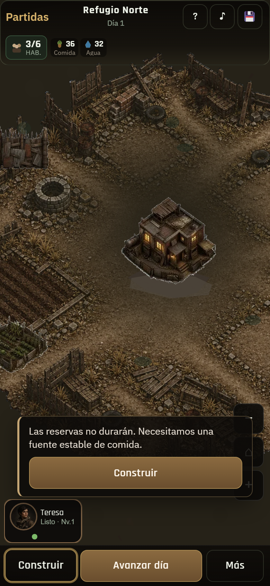
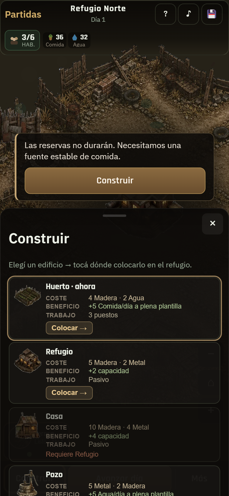
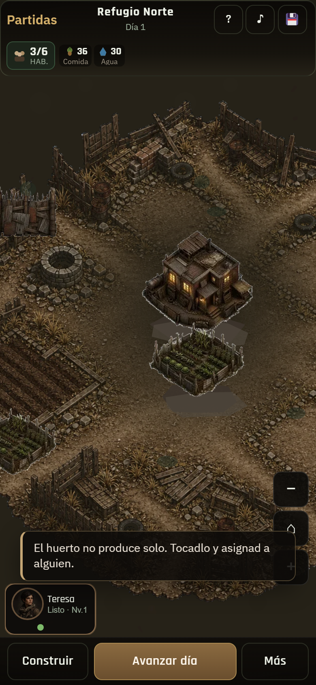
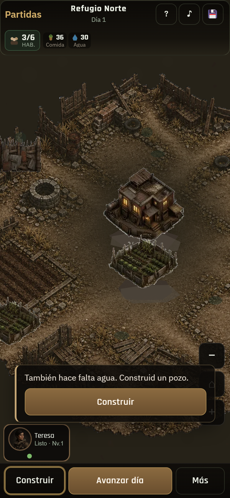
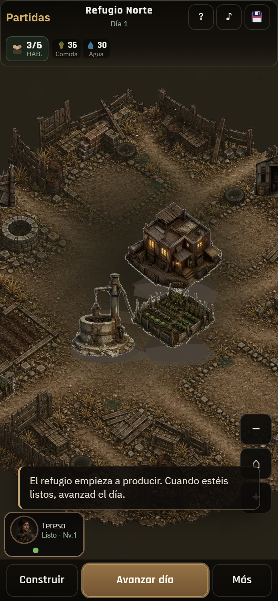
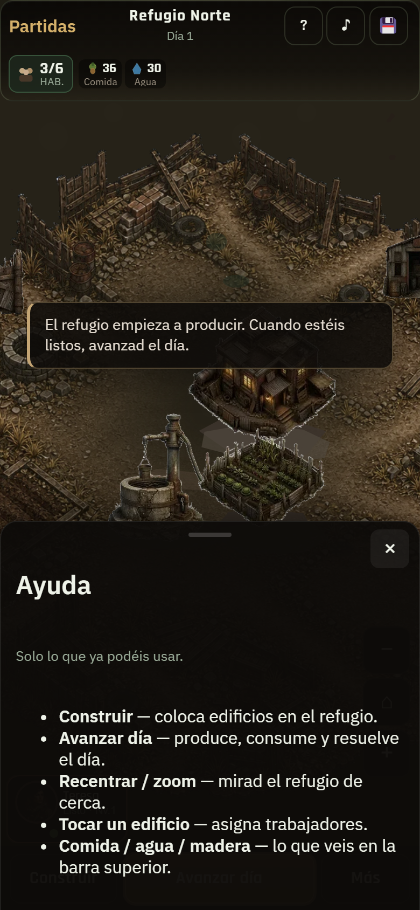
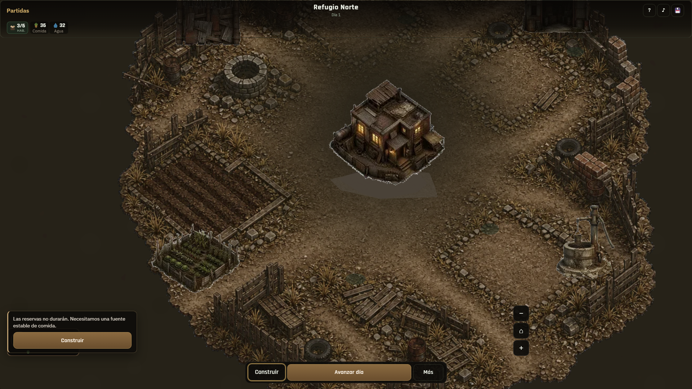
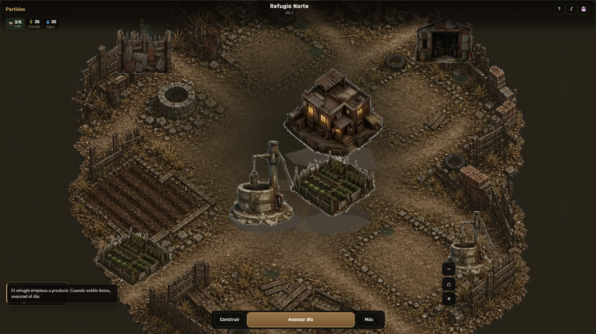
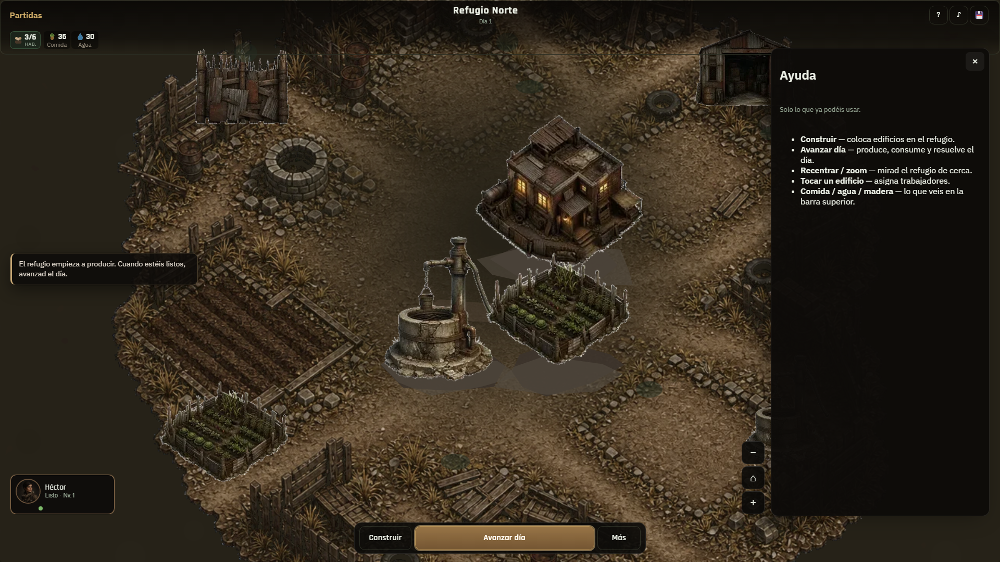

01 · Móvil tip comida
Pista contextual + Construir pulse

02 · Móvil construir
Huerto sugerido

03 · Móvil tip staffing
Avance por acción

04 · Móvil tip agua
Siguiente necesidad

05 · Móvil tip avanzar
Sin Continuar

06 · Móvil ayuda
§21.3 consultable

07 · Desktop tip comida
Coach en mundo

08 · Desktop listo
Guía sin cascada

09 · Desktop ayuda
Ayuda filtrada